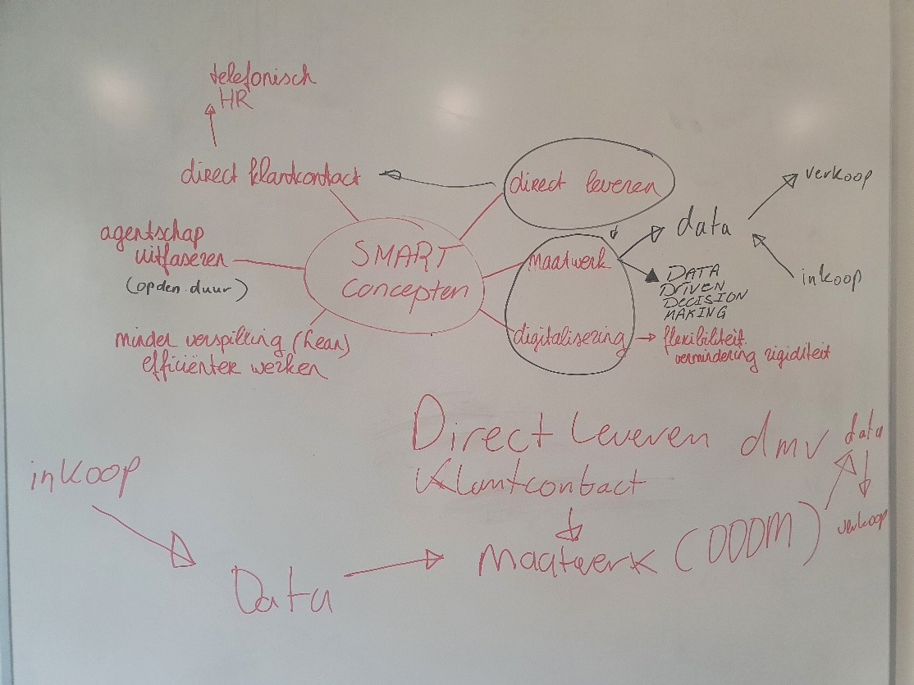
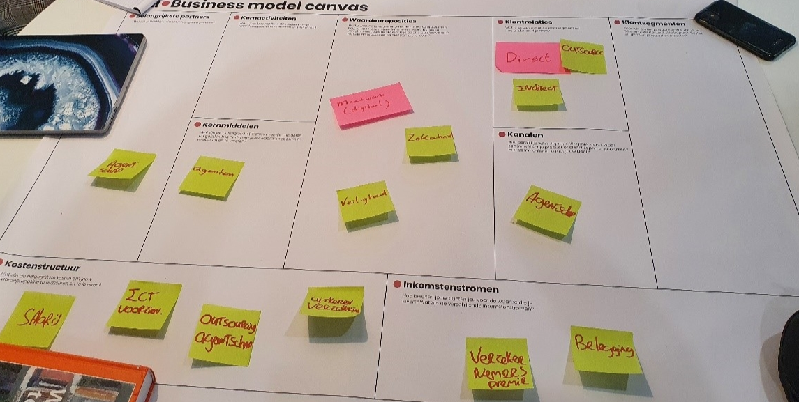

Terug


Casus opdracht AXA
Situatie:
• Turkse dochter van een internationale verzekeraar. De verzekeraar biedt een breed pallet aan verzekeringen: bijv. levens-, schade-, inkomens- en pensioenverzekeringen;
• De concurrentie op de markt is zeer sterk, waardoor WA (MTPL) verzekeringen verliesgevend geworden voor deze verzekeraar. De verzekeraar wil graag actief blijven in deze markt (auto verzekeringen), omdat deze verzekeringen een basis vormen voor andere verzekeringen.
• Het bedrijf verkoopt zijn polissen via een agentennetwerk en heeft dus geen rechtstreeks contact met haar klanten.
De opdracht
Bij deze situatie werd de vraag gesteld of het huidige BMC in kaart kon worden gebracht(foto 1). Dit is gedaan met de groene post-its zoals op de foto te zien is. Daarnaast werdt gevraagd om nieuwe elementen hieraan toe te voegen, dit is gedaan middels de roze post-its.
Vervolgens is er een creatieve sessie gehouden(foto 2) waarin we als team hebben gebrainstormd over de mogelijkheden die er zijn om toch in de markt van WA-verzekeringen actief te blijven. Dit idee wordt ook wel het smart concept genoemd. Een van onze adviezen daarbij was het inzetten van Data Driven Dicioson making, met daarbij de mogelijkheid om in te spelen op specifieke data van een klant.
Foto 2: Smart Concept
Uiteindelijk is er een veranderplan opgesteld waarbij het probleem, de oplossing en de acties onder elkaar zijn weergegeven (scroll naar beneneden voor foto 3). Onze conclusies waren: direct klant contact, DDDM voor maatwerk en inspelen op klantbehoeftes en het op termijn uit faseren van agentschappen. Dit kan gedaan worden door data in te kopen, data van klanten intern op te slaan om vervolgens te gebruiken om op het gedrag in te spelen, meldingen waarmee je mensen stuurt en het belonen van goed gedrag van klanten.
Toepassing project
Naast deze casus was de opdracht voor deze week om een BMC te ontewerpen voor de projectorganisatie. In mijn geval betekende dat dat ik er 2 moest maken, 1 voor Heelmetaal en 1 voor FMI. Deze BMC's zien er als volgt uit:
BMC Heelmetaal
BMC FMI


Foto 1: Business model canvas: groen = huidig, roze = nieuw
Foto 3:veranderplan